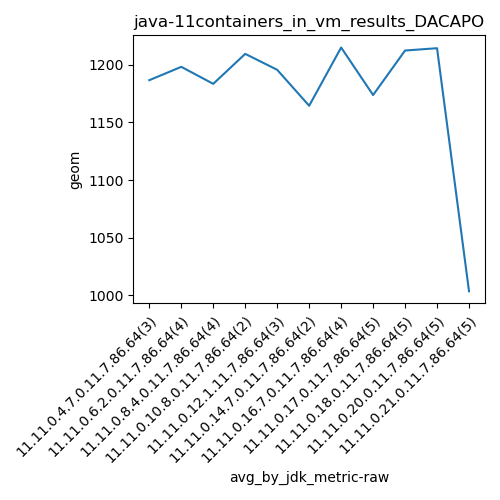

java-11 DACAPO
Context at bottom
/home/jvanek/git/benchmarks-in-nested-virtualisation-toolchain/final_results/containers_in_vm_results/containers_in_vm_results_JMH
java-11
DACAPO
/home/jvanek/git/benchmarks-in-nested-virtualisation-toolchain/final_results/containers_in_vm_results/containers_in_vm_results_J2DBENCH
java-11
DACAPO
/home/jvanek/git/benchmarks-in-nested-virtualisation-toolchain/final_results/containers_in_vm_results/containers_in_vm_results_RADARGUNs3
java-11
DACAPO
/home/jvanek/git/benchmarks-in-nested-virtualisation-toolchain/final_results/containers_in_vm_results/containers_in_vm_results_SPECJBB
java-11
DACAPO
/home/jvanek/git/benchmarks-in-nested-virtualisation-toolchain/final_results/containers_in_vm_results/containers_in_vm_results_RADARGUNs1
java-11
DACAPO
/home/jvanek/git/benchmarks-in-nested-virtualisation-toolchain/final_results/containers_in_vm_results/containers_in_vm_results_DACAPO
java-11
DACAPO
containers_in_vm_results_DACAPO
final score
Expected number of java-11 JDKs: 11
1st avgmed_alljdks_metric:
/home/jvanek/git/benchmarks-in-nested-virtualisation-toolchain/final_results/result_processing.py /home/jvanek/git/benchmarks-in-nested-virtualisation-toolchain/final_results/containers_in_vm_results/containers_in_vm_results_DACAPO geom False
values: [1209, 1201, 1150, 1191, 1240, 1190, 1172, 1201, 1128, 1223, 1182, 1247, 1172, 1223, 1156, 1208, 1177, 1152, 1094, 1179, 1201, 1386, 1177, 1164, 1173, 1235, 1120, 1084, 1208, 1203, 1257, 1310, 1197, 1169, 1161, 1189, 1356, 1073, 977, 1001, 994, 973]

Expected number of iterations: 5
final number of values: 42 out of 55
Pass rate: 76.4%
values: (973, 1386, 1173.8809523809523, 1182)

** accuracy from all jdks and runs
more is better
MIN: 973
MAX: 1386
AVG: 1173.8809523809523
MED: 1182
Relative differences 1:
MIN-MAX: 30.0 %
MIN-AVG: 17.0 %
MIN-MED: 18.0 %
MAX-MIN: -42.0 %
MAX-AVG: -18.0 %
MAX-MED: -17.0 %
AVG-MED: 1.0 %
stored to java-11.properties. sort | uniq that!
2nd avgmed_by_jdk_metric:
values: [1186.6666666666667, 1198.25, 1183.5, 1209.5, 1195.6666666666667, 1164.5, 1215.0, 1173.8, 1212.4, 1214.4, 1003.6]

values: [1201, 1191, 1201, 1247, 1208, 1177, 1201, 1173, 1208, 1189, 994]

values: (1003.6, 1215.0, 1177.9348484848485, 1195.6666666666667)
values: (994, 1247, 1180.909090909091, 1201)

** accuracy from all jdks where runs were avged
more is better
MIN: 1003.6
MAX: 1215.0
AVG: 1177.9348484848485
MED: 1195.6666666666667
Relative differences 1:
MIN-MAX: 17.0 %
MIN-AVG: 15.0 %
MIN-MED: 16.0 %
MAX-MIN: -21.0 %
MAX-AVG: -3.0 %
MAX-MED: -2.0 %
AVG-MED: 1.0 %
stored to java-11.properties. sort | uniq that!
** accuracy from all jdks where runs were medianed
more is better
MIN: 994
MAX: 1247
AVG: 1180.909090909091
MED: 1201
Relative differences 1:
MIN-MAX: 20.0 %
MIN-AVG: 16.0 %
MIN-MED: 17.0 %
MAX-MIN: -25.0 %
MAX-AVG: -6.0 %
MAX-MED: -4.0 %
AVG-MED: 2.0 %
stored to java-11.properties. sort | uniq that!
pass rates:
containers_in_vm_results_DACAPO=76.4%
Context:
- containers_in_vm_results
- DACAPO